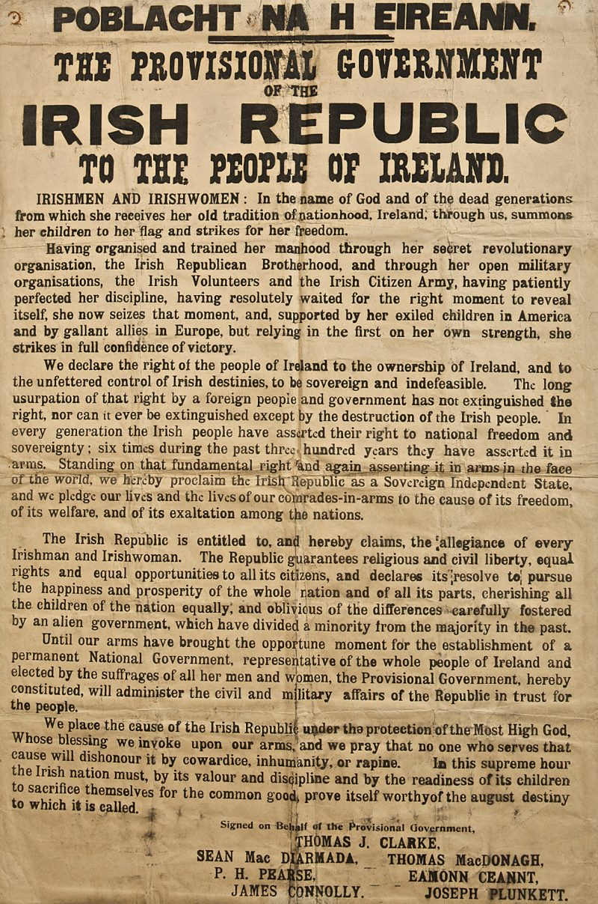

|  |
| The proclamation read by Patrick Pearse at Midday on Monday 24 April, 1916. |
Around midday on Monday 24 April 1916, Patrick Pearse read a proclamation on behalf of the ‘Provisional Government of the Irish Republic’ at the front of the General Post Office (GPO) on Dublin’s Sackville Street (now O’Connell Street). This marked the symbolic opening of what is now most commonly referred to as the Easter Rising (the British referred to it as a ‘rebellion’ or ‘insurrection’). That day, over 1,200 members of the Irish Volunteers, the Irish Citizen Army, Hibernian Rifles and Cumann na mBan occupied a series of buildings around Dublin, as well as a public park at St. Stephens’ Green. The General Post Office would become the headquarters for the Irish rebellion and the base for five of the seven signees of the proclamation.
More Information can be found at: https://mountstreet1916.ie/